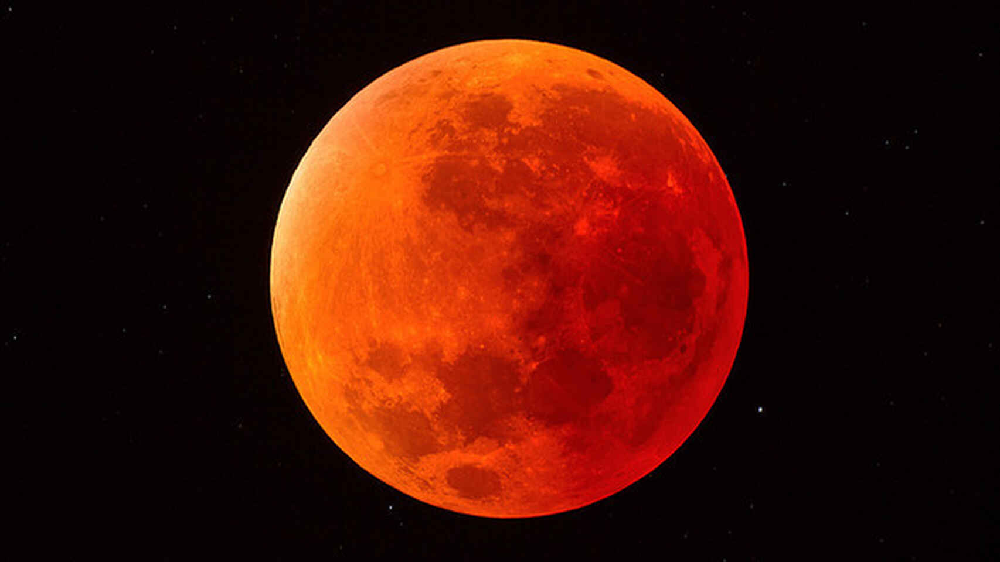
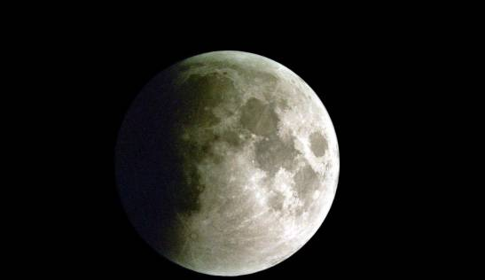
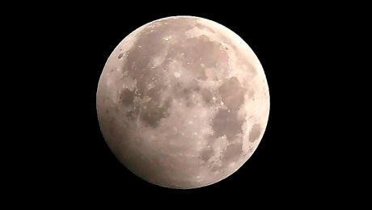

| Index | Supernova | Eclipse Solar | Agujero Negro | NASA |
¿Qué es?Un eclipse lunar es un fenómeno astronómico que ocurre cuando la Tierra pasa directamente entre la Luna y el Sol, causando que la sombra de la Tierra producida por la luz del Sol, se proyecte sobre la Luna. Para que esto ocurra, se requiere que los tres cuerpos celestes se encuentren en una posición de "Sicigia" o cercana a ella. Esto significa que están formados en línea recta. El tipo y duración de un eclipse lunar depende de la posición de la Luna respecto a sus nodos orbitales que son los puntos donde la órbita de la Luna cruza el plano de la órbita del Sol. |
Tipos de eclipses lunaresExisten tres tipos de eclipses, los eclipses totales, los eclipses parciales y los eclipses penumbrales. Eclipse Lunar TotalOcurre cuando la Luna en su totalidad (entera) pasa a través de la sombra umbral terrestre. En otras palabras, la Luna entra por completo en el cono de la umbra. Durante el desarrollo y transcurso de este tipo de eclipses, la Luna pasa por la secuencia de eclipses siguiente: 1) penumbral, 2) parcial, 3) total, 4) parcial y 5) penumbral. Eclipse Lunar ParcialEn este caso, solo una parte de la Luna entra en la sombra umbral de la Tierra y por consiguiente la otra parte se encuentra en la zona penumbral. Este tipo de eclipse es más común que el total y puede observarse como una sombra que cubre parcialmente la superficie de la Luna. Eclipse Lunar PenumbralLa Luna solo pasa por el área de la penumbra. Es el tipo más difícil de observar ya que la sombra sobre la Luna se muestra bastante sutil, precisamente porque la penumbra es una sombra difusa. Adicionalmente, se considera el eclipse penumbral total si la Luna está completamente dentro de la zona penumbral, y eclipse penumbral parcial si solo una parte de la Luna está dentro de la penumbra y la otra sin sombra alguna. |